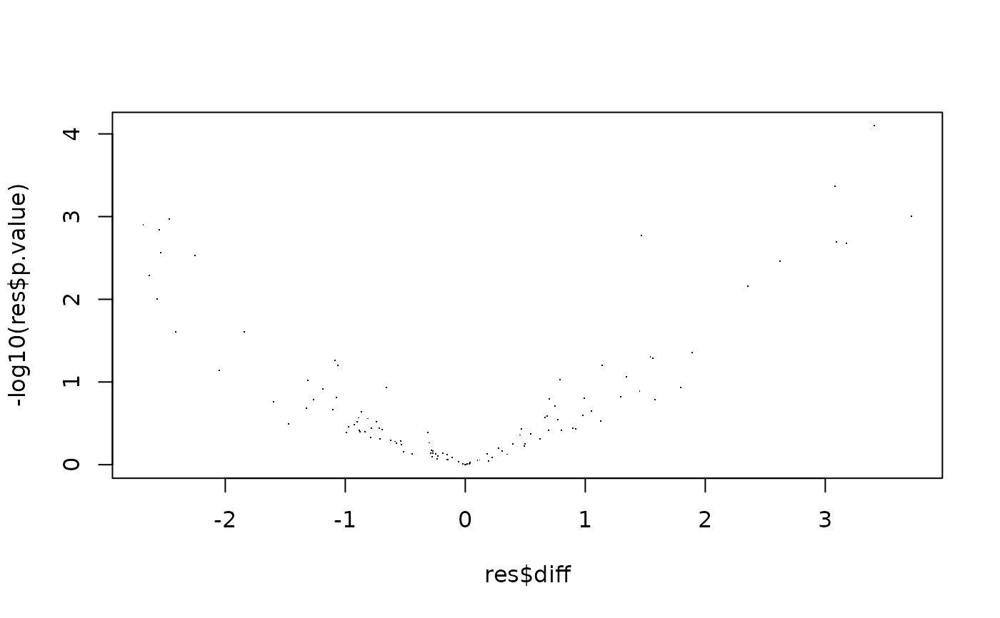

Compute contrasts with group mean imputation (DEPRECATED)
Source:R/ContrastsSimpleImpute.R
ContrastsMissing.RdCompute contrasts with group mean imputation (DEPRECATED)
Compute contrasts with group mean imputation (DEPRECATED)
Details
`r lifecycle::badge("deprecated")` (placeholder — prolfqua does not yet depend on the lifecycle package; consider this a soft deprecation notice. See Deprecated below.)
If there are no observations in one of the groups for some of the proteins, the group mean cannot be estimated. Therefore, assuming that the observation is missing because the protein abundance is below the detection limit, we substitute the unobserved group with the median of protein abundances observed only in one sample of the group. The variance of a protein is estimated using the pooled variance of all observations of all groups.
Deprecated
`ContrastsMissing` is a pre-fitting group-mean substitution: it does
not fit a per-protein model, just stamps the group-mean delta with a
pooled-variance t-test. It is superseded by
build_model_impute which refits failed/singular
proteins with LOD-imputed values and borrowed variance per protein.
New code should prefer the lm_impute facade
(ContrastsLMImputeFacade) or any of its
limma_impute / limma_voom_impute cousins. Constructing
ContrastsMissing emits a .Deprecated warning at
initialize time.
Still reachable via model = "lm_missing" for users who want
to explicitly run the group-mean fallback; the construction emits a
.Deprecated warning each time. Will be removed once a
merge-style replacement (e.g. an lm_impute_missing facade
composing build_model with build_model_impute) lands.
See also
build_model_impute,
ContrastsLMImputeFacade
Other modelling:
AnovaExtractor,
Contrasts,
ContrastsDEqMSFacade,
ContrastsDEqMSVoomFacade,
ContrastsFacadeBase,
ContrastsFirth,
ContrastsFirthFacade,
ContrastsFirthNestedFacade,
ContrastsLMFacade,
ContrastsLMImputeFacade,
ContrastsLMMissingFacade,
ContrastsLimma,
ContrastsLimmaFacade,
ContrastsLimmaImputeFacade,
ContrastsLimmaVoomFacade,
ContrastsLimmaVoomImputeFacade,
ContrastsLimpaFacade,
ContrastsLimpaNestedFacade,
ContrastsLmerNestedFacade,
ContrastsModerated,
ContrastsModeratedDEqMS,
ContrastsPlotter,
ContrastsRLMFacade,
ContrastsROPECA,
ContrastsROPECANestedFacade,
ContrastsRfitFacade,
ContrastsRfitImputeFacade,
ContrastsTable,
INTERNAL_FUNCTIONS_BY_FAMILY,
LR_test(),
Model,
ModelFirth,
ModelLimma,
StrategyLM,
StrategyLimma,
StrategyLimpa,
StrategyLmer,
StrategyLogistf,
StrategyRLM,
StrategyRfit,
build_contrast_analysis(),
build_model(),
build_model_glm_peptide(),
build_model_glm_protein(),
build_model_impute(),
build_model_limma(),
build_model_limma_impute(),
build_model_limma_voom(),
build_model_limma_voom_impute(),
build_model_limpa(),
build_model_logistf(),
compute_borrowed_variance(),
compute_borrowed_variance_limma(),
compute_contrast(),
compute_lmer_contrast(),
contrasts_fisher_exact(),
df.residual.rfit_prolfqua(),
get_anova_df(),
get_complete_model_fit(),
get_p_values_pbeta(),
group_label(),
impute_refit_singular(),
is_singular_lm(),
linfct_all_possible_contrasts(),
linfct_factors_contrasts(),
linfct_from_model(),
linfct_matrix_contrasts(),
list_facades(),
lookup_facade(),
merge_contrasts_results(),
model_analyse(),
model_summary(),
moderated_p_deqms(),
moderated_p_deqms_long(),
moderated_p_limma(),
moderated_p_limma_long(),
new_imputed_model(),
pivot_model_contrasts_to_wide(),
plot_lmer_peptide_predictions(),
register_facade(),
sigma.rfit_prolfqua(),
sim_build_models_lm(),
sim_build_models_lmer(),
sim_build_models_logistf(),
sim_make_model_lm(),
sim_make_model_lmer(),
strategy_limma(),
strategy_limpa(),
strategy_logistf(),
summary_ROPECA_median_p.scaled(),
unregister_facade(),
vcov.rfit_prolfqua()
Super class
prolfqua::ContrastsInterface -> ContrastsMissing
Public fields
subject_idsubject_id e.g. protein_ID column
contrastsarray with contrasts (see example)
model_namemodel name
contrast_resultdata frame with results of contrast computation
lfqdatadata frame
confintconfidence interval
p.adjustfunction to adjust p-values
globalTake global or local values for imputation
presentdefault 1, presence in interaction to infer limit of detection.
minsddefault 1, if standard deviation can not be estimated, what is the prior minimum sd, default = 1s
Methods
Inherited methods
prolfqua::ContrastsInterface$column_description()prolfqua::ContrastsInterface$contrast_summary_table()prolfqua::ContrastsInterface$extra_artifacts()prolfqua::ContrastsInterface$filter_significant()prolfqua::ContrastsInterface$get_config()prolfqua::ContrastsInterface$get_missing()prolfqua::ContrastsInterface$get_ora()prolfqua::ContrastsInterface$get_rank()
Method new()
initialize
Usage
ContrastsMissing$new(
lfqdata,
contrasts,
confint = 0.95,
p.adjust = prolfqua::adjust_p_values,
model_name = "groupAverage"
)Method to_wide()
convert contrast results to wide format
Usage
ContrastsMissing$to_wide(columns = c("p.value", "FDR", "statistic"))Examples
Nprot <- 120
istar <- prolfqua::sim_lfq_data_protein_config(Nprot = Nprot,weight_missing = .4)
#> creating sampleName from file_name column
#> completing cases
#> completing cases done
#> setup done
istar$data$abundance |> is.na() |> sum()
#> [1] 283
protIntensity <- istar$data
config <- istar$config
lProt <- LFQData$new(protIntensity, config)
lProt$rename_response("transformedIntensity")
Contr <- c("dil.b_vs_a" = "group_A - group_Ctrl")
csi <- ContrastsMissing$new(lProt, contrasts = Contr)
#> Warning: ContrastsMissing is deprecated: it substitutes group means rather than fitting a model. Prefer build_model_impute (LOD-imputed per-protein refit with borrowed variance) via the lm_impute / limma_impute facades. See ?ContrastsMissing for details.
csi$get_contrast_sides()
#> # A tibble: 1 × 3
#> contrast group_1 group_2
#> <chr> <chr> <chr>
#> 1 dil.b_vs_a group_A group_Ctrl
res <- csi$get_contrasts()
#> dil.b_vs_a=group_A - group_Ctrl
#> dil.b_vs_a=group_A - group_Ctrl
#> dil.b_vs_a=group_A - group_Ctrl
stopifnot(nrow(res) == (protIntensity$protein_Id |> unique() |> length()))
res$contrast |> table()
#>
#> dil.b_vs_a
#> 120
stopifnot((res$p.value |> is.na() |> sum()) == 0)
plot(res$diff, -log10(res$p.value), pch = ".")

csi$column_description()
#> column_name
#> modelName modelName
#> estimate_type estimate_type
#> contrast contrast
#> avgAbd avgAbd
#> diff diff
#> FDR FDR
#> statistic statistic
#> std.error std.error
#> df df
#> p.value p.value
#> conf.low conf.low
#> conf.high conf.high
#> sigma sigma
#> description
#> modelName selected analysis method / facade key (e.g. lm, rfit, limma_impute)
#> estimate_type how the estimate was produced: observed, lod_imputed, or missing_fallback
#> contrast name of difference e.g. group1_vs_group2
#> avgAbd mean abundance value of protein in all samples
#> diff difference among conditions
#> FDR false discovery rate
#> statistic t-statistics
#> std.error standard error
#> df degrees of freedom
#> p.value p-value
#> conf.low lower value of 95 confidence interval
#> conf.high high value of 95 confidence interval
#> sigma residual standard deviation of linear model (needed for empirical Bayes variance shrinkage).
x<- csi$get_Plotter()
p <- x$volcano()
pdf(file = NULL)
print(p)
#> $p.value
#>
#> $FDR
#>
dev.off()
#> agg_record_1bc0de9b17
#> 2
dd <- prolfqua::sim_lfq_data_2factor_config(Nprot = 100,weight_missing = 0.1)
#> creating sampleName from file_name column
#> completing cases
#> completing cases done
#> setup done
Contrasts <- c("c1" = "TreatmentA - TreatmentB",
"C2" = "BackgroundX- BackgroundZ",
"c3" = "`TreatmentA:BackgroundX` - `TreatmentA:BackgroundZ`",
"c4" = "`TreatmentB:BackgroundX` - `TreatmentB:BackgroundZ`"
)
lProt <- LFQData$new(dd$data, dd$config)
lProt$rename_response("transformedIntensity")
csi <- ContrastsMissing$new(lProt, contrasts = Contrasts)
#> Warning: ContrastsMissing is deprecated: it substitutes group means rather than fitting a model. Prefer build_model_impute (LOD-imputed per-protein refit with borrowed variance) via the lm_impute / limma_impute facades. See ?ContrastsMissing for details.
res <- csi$get_contrasts()
#> c1=TreatmentA - TreatmentB
#> C2=BackgroundX- BackgroundZ
#> c3=`TreatmentA:BackgroundX` - `TreatmentA:BackgroundZ`
#> c4=`TreatmentB:BackgroundX` - `TreatmentB:BackgroundZ`
#> c1=TreatmentA - TreatmentB
#> C2=BackgroundX- BackgroundZ
#> c3=`TreatmentA:BackgroundX` - `TreatmentA:BackgroundZ`
#> c4=`TreatmentB:BackgroundX` - `TreatmentB:BackgroundZ`
#> c1=TreatmentA - TreatmentB
#> C2=BackgroundX- BackgroundZ
#> c3=`TreatmentA:BackgroundX` - `TreatmentA:BackgroundZ`
#> c4=`TreatmentB:BackgroundX` - `TreatmentB:BackgroundZ`
pl <- csi$get_Plotter()
pdf(file = NULL)
pl$volcano()
#> $p.value
#>
#> $FDR
#>
dev.off()
#> agg_record_1bc0de9b17
#> 2